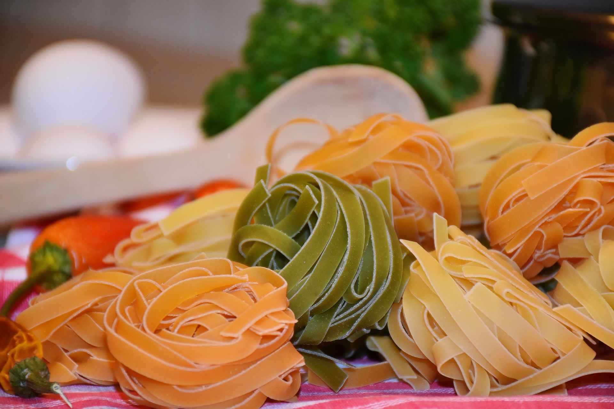
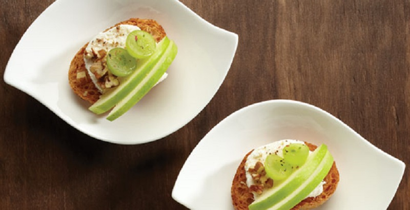

Las pastas son uno de los ingredientes más universales que existen. La pasta italiana, con su inmensa variedad, se adapta a la cocina de cada lugar y toma nuevas y deliciosas formas de cocción y aderezo, que reflejan la cultura culinaria de cada país.

Un aperitivo delicioso y crujiente. Rápido y fácil de preparar. Se lleva muy bien con una copa de buen vino. Me gusta acompañarlo con una ensalada.